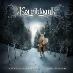

|
|
||
Korpiklaani : Tales Along This Road (2006) |
|

http://www.korpiklaani.com |
1. Happy Little Boozer 3:34 |
8.8/10 |
|
Tales Along this Road es el tercer disco de la banda finlandesa Korpiklaani. Korpiklaani hacen un folk metal basado en la Humppa (versión finlandesa de la polka), bastante cañero y con voz agresiva. La referencia más cercana que conozco sería el grupo Finntroll, aunque Finntroll se adentra algo más que Korpiklaani en los dominios más oscuros del metal. Los acordeones y las flautas en "Happy Little Boozer" no dejan lugar a dudar de su orientación folk, pero la trepidante batería que soporta el infernal ritmo de la canción, que no se toma un respiro, y la desgarrada voz nos meten de lleno en el metal, con un simple pero pegadizo estribillo que no puedo dejar de mencionar. Las guitarras proporcionan una densa base a "Väkirauta", un tema muy oscuro, de nuevo de ritmo frenético, con algunos gruñidos de acompañamiento realmente terribles y un rapidísimo solo de acordeón para no perder el toque folk. Menos tenebroso es "Midsummer Night", que sin perder un ápice de velocidad permite escuchar un registro de voz algo más melódico. "Tuli Kokko" arranca en acústico pero se transforma en un oscuro medio tiempo con coros bastante originales. El quinto corte, "Spring Dance" es una pieza instrumental, rápida, brillante, con acordeones y violines desbocados. "Under the Sun" es un tema lento y melódico, con algunos coros normalitos, flautas solistas, y algún instrumento de cuerda que no logro identificar. Un poco más rápido, "Korpiklaani" se mueve sobre la base guitarrera, con un marcado ritmo y un pegadizo estribillo como ingredientes fundamentales y una sección instrumental-folk para remarcar el estilo de la banda. Recuperamos la fulgurante batería en "Rise", junto a una Mandolina, densos riffs de guitarra como fondo, rápidos arranques del violín y un fabuloso estribillo a coro. Sin tiempo a respirar, nos coge al asalto "Kirki", probablemente la canción más rápida del álbum, con coros remarcables y un brutal diálogo entre acordeón y guitarra. La guitarra abre "Hide Your Richess" aunque el acordeón pronto recoge el testigo de la melodía en otro tema rápido para cerrar el disco. Canciones frenéticas que no dan respiro, voz desgarrada que se mueve entre registros casi melódicos y otros bastante extremos y el acordeón como gran protagonista de la instrumentación folk. Si no te gustan esos ingredientes, este disco no te gustará, pero para todos los demás, este es un fantástico trabajo, cañero, melódico y original: una combinación que no se encuentra todos los días. |
||
- Crítica escrita por Rubén Béjar - |
||